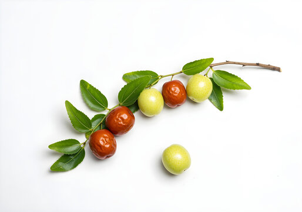

Ziziphus

| Index |
|---|
| Short description |
| Nutritional value |
| Health benefits |
| Best time to eat |
| Who shoud avoid |
| Fun fact |
Short Description
Ziziphus, commonly known as Ber or Indian Jujube, is a small, round fruit with a sweet and tangy taste. It is popular in India and used fresh, dried, and in traditional medicine.
Nutritional Value
| Nutrient | Amount |
|---|---|
| Calories | 79 kcal |
| Carbohydrates | 20 g |
| Fiber | 6 g |
| Vitamin C | High |
| Iron | Present |
| Antioxidants | Present |
Health Benefits
- Improves digestion
- Boosts immunity
- Strengthens bones
- Good for skin health
- Improves blood circulation
Best Time to Eat
Best eaten:
- Morning or afternoon
- Fully ripe fruit
Avoid late-night consumption.
Who Should Avoid
- People with constipation, in excess
- Those with weak digestion
- Diabetics, monitor quantity
Fun Fact
- Ber is mentioned in ancient Indian texts
- Dried ber increases sweetness
- Tree survives extreme climates